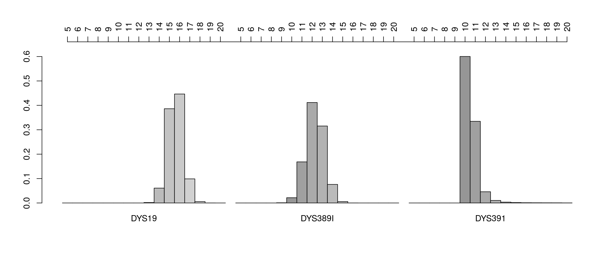

Introduction
Mikkel Meyer Andersen
21 April, 2018
introduction.RmdIntroduction
This tutorial introduces the discrete Laplace method implemented in this R package (disclapmix) for estimating Y-STR haplotype frequencies as described by (Andersen, Eriksen, and Morling 2013).
First, we demonstrate how to use the open source software for basic tasks as e.g. haplotype frequency estimation and also more advanced tasks as e.g. deconvolution of two person mixtures. First, some packages are loaded (Andersen and Eriksen 2014):
library(disclap)
library(disclapmix)If you do not have installed the disclap package, please visit http://cran.r-project.org/package=disclap.
For reproducibility, the seed for the (pseudo) random number generator is set:
set.seed(1)The discrete Laplace distribution
The discrete Laplace distribution is a probability distribution like e.g. the binomial distribution or the normal/Gaussian distribution.
The discrete Laplace distribution has two parameters: a dispersion parameter \(0 < p < 1\) and a location parameter \(y \in \mathbb{Z} = \{..., -2, -1, 0, 1, 2, ... \}\).
Let \(X \sim DL(p, y)\) denote that the random variable \(X\) follows a discrete Laplace distribution with dispersion parameter \(0 < p < 1\) and location parameter \(y\). Then a realisation of the random variable, \(X = x\), can be any integer in \(\mathbb{Z}\). The random variable \(X\) has the probability mass function given by \[\begin{align} f(X = x; p, y) = \frac{1-p}{1+p} \cdot p^{\vert x - y \vert} \quad \text{for $x \in \mathbb{Z}$}. \end{align}\]As seen, only the absolute value of \(x - y\) is used. This means that the probability mass function is symmetric around \(y\).
Let us try to plot the probability mass function \(f(X = x; p, y)\) for \(p=0.3\) and \(y=13\) from \(x=8\) to \(x=18\):
p <- 0.3
y <- 13L # L for integer type
x <- seq(8L, 18L, by = 1L)
barplot(ddisclap(x - y, p), names = x, xlab = "x, e.g. Y-STR allele",
ylab = paste("Probability mass, f(X = x; ", p, ", ", y, ")", sep = ""))The probability mass function, \(f(X = x; p, y)\), for the discrete Laplace distribution with dispersion parameter \(p=0.3\) and location parameter \(y=13\) from \(x=8\) to \(x=18\).
We plot the distribution for values of \(x\) from \(8\) to \(18\) as there is almost no probability mass outside these values. We can find out how much of the probability mass that we have plotted:
sum(ddisclap(x - y, p))## [1] 0.9988785Thus, only 0.0011215 of the probability mass is outside \(\{8, 9, ..., 17, 18\}\).
If we have a sample of realisations from \(X \sim DL(p, y)\) denoted by \(\{ x_i \}_{i=1}^n\), then maximum likelihood estimates are given by the following quantities (Andersen, Eriksen, and Morling 2013): \[\begin{align} \hat{y} &= \text{median} \{ x_i \}_{i=1}^n , \\ \hat{\mu} &= \frac{1}{n} \sum_{i=1}^n \vert x_i - \hat{y} \vert \, \text{and} \\ \hat{p} &= \hat{\mu}^{-1} \left (\sqrt{\hat{\mu}^2 + 1} - 1 \right ) . \end{align}\]Example:
set.seed(1) # Makes it possible to reproduce the simulation results
p <- 0.3 # Dispersion parameter
y <- 13 # Location parameter
x <- rdisclap(100, p) + y # Generate a sample using the rdisclap function
y_hat <- median(x)
y_hat## [1] 13mu_hat <- mean(abs(x - y_hat))
mu_hat## [1] 0.57p_hat <- mu_hat^(-1) * (sqrt(mu_hat^2 + 1) - 1)
p_hat # We expect 0.3## [1] 0.2649877# The observed distribution of d's
tab <- prop.table(table(x))
tab## x
## 10 11 12 13 14 15 16
## 0.01 0.03 0.15 0.55 0.20 0.05 0.01This can be plotted against the expected counts as follows:
plot(1L:length(tab), ddisclap(as.integer(names(tab)) - y_hat, p_hat),
type = "h", col = "#999999", lend = "butt", lwd = 50,
xlab = "x, e.g. Y-STR allele", ylab = "Probability mass", axes = FALSE)
axis(1, at = 1L:length(tab), labels = names(tab))
axis(2)
points(1L:length(tab), tab, type = "h", col = "#000000",
lend = "butt", lwd = 25)
legend("topright", c("Estimated distribution", "Observations"),
pch = 15, col = c("#999999", "#000000"))
Observed frequencies of the \(x\)’s compared to a discrete Laplace distribution with parameters estimated from the sample.
Mixtures of discrete Laplace distributions
In this section, the method is described. We do this first by a short formulation followed by a longer description with more details.
Short model formulation
Assume that there are \(c\) subpopulations and that \(\tau_j = P(\text{From subpopulation } j)\) is the a priori probability of a haplotype originated from the \(j\)’th subpopulation for \(j = 1, 2, ..., c\). Then \[\begin{align} P(\text{Haplotype} = x \mid \text{From subpopulation } j) \end{align}\]is modelled by assuming independent discrete Laplace distribtions on loci as just described and by (Andersen, Eriksen, and Morling 2013). The parameters of the model can be estimated using this package, disclapmix, as will be shown below.
Longer model formulation
Assume a very simple ‘haplotype’ with only one locus. Also assume a simple and isolated population. Then, it is reasonable to assume that there is a modal/central Y-STR allele, \(y\), and that all the alleles are distributed around this allele.
If we go back to Figure~@ref(fig:simple-example), this can be illustrated by \(y=13\) as the central Y-STR allele and a distribution around \(y=13\) with shorter and longer alleles.
To begin with, it might seem a bit overwhelming that Y-STR alleles should follow a simple probabiity distribution such as the discrete Laplace distribution. But surprisingly, it is actually a good approximation as demonstrated by (Andersen, Eriksen, and Morling 2013).
We have haplotypes with several loci. When we assess multiple loci haplotypes, we assume that mutations happen independently across loci. Each locus has its own discrete Laplace distribution of allele probabilities, and the probability of a haplotype is the product of probabilities across loci. This gives a multivariate discrete Laplace distribution, where the marginals (that is, at each locus) are independent, discrete Laplace distributions.
Just as before, for a one locus haplotype, we can assume that there is a modal/central Y-STR profile with \(r\) loci, \(y=(y_1, y_2, ..., y_r)\), and all the alleles are distributed around this profile. We also assume that the discrete Laplace distribution at each locus has its own parameter, where \(p_k\) is the parameter at the \(k\) locus. Normally, the central Y-STR profile, \(y\), would also be regarded as parameters.
As before, let \(f(x; p, y)\) be the probability mass function of a discrete Laplace distribution. We define an observation \(X = (X_{1}, X_{2}, ..., X_{r})\) to be from a multivariate distribution of independent, discrete Laplace distributions when the probability of observing \(X=x\) is \[\begin{align} {#eq:disclap-independent} P(X = x) = \prod_{k=1}^r f \left ( x_{k} ; p_{k}, y_{k} \right ). \end{align}\]This corresponds to that the individual \(X\) has mutated away from \(y\) independently at each locus.
Now, we have one more generalisation. A population may have several subpopulations, e.g. introduced by migration or by evolution. This means that we need to have a mixture of multivariate distributions with marginally independent, discrete Laplace distributions. Each component in the mixture represents a subpopulation. We define an observation \(X = (X_{1}, X_{2}, ..., X_{r})\) to be from a mixture of multivariate, marginally independent, discrete Laplace distributions, when the probability of observing \(X=x\) is \[\begin{align} {#eq:disclap-mixtures} P(X = x) = \sum_{j=1}^c \tau_j \prod_{k=1}^r f \left ( x_{k} ; p_{jk}, y_{jk} \right ) , \end{align}\]where \(\tau_j\) is the a priori probability for originating from the \(j\)’th subpopulation. Thus, the parameters of this mixture model are \(\{ y_j \}_{j=1}^c\) with \(y_j = (y_{j1}, y_{j2}, ..., y_{jr})\) as the central haplotype of the \(j\) subpopulation, \(\{ \tau_j \}_{j=1}^c\) and \(\{ p_{jk} \}_{\substack{j\in \{1, 2, ..., c\}\\k \in \{1, 2, ..., r\}}}\) (the parameters for each discrete Laplace distribution).
We assume that \(p_{jk}\) depends on locus and subpopulation, such that \(\log p_{jk} = \omega_j + \lambda_k\). This means that there is an additive effect of locus, \(\lambda_k\), and an additive effect of subpopulation, \(\omega_j\).
More theory on finite mixture distributions is given by (Titterington, Smith, and Makov 1987).
Haplotype frequency prediction
When we have estimated the parameters of a mixture of multivariate, marginally independent, discrete Laplace distributions (this will be shown in the next section), we can use these to estimate haplotype frequencies.
Given estimates of subpopulation central haplotypes \(\{ \hat{y}_{j} \}_{j}\), dispersion parameters \(\{ \hat{p}_{jk} \}_{j,k}\) and prior probabilities \(\{ \hat{\tau}_{j} \}_{j}\), the haplotype frequency of a haplotype \(x = (x_1, x_2, ..., x_r)\) with \(x_k \in \mathbb{Z}\) for \(k \in \{1, 2, ..., r\}\) can be estimated as \[\begin{align} {#eq:disclap-predict} \hat{p}(x) = \sum_{j=1}^c \hat{\tau}_j \prod_{k=1}^r f \left ( x_k ; \hat{p}_{jk}, \hat{y}_{jk} \right ). \end{align}\]Thus, we simply use the estimated parameters in Equation~ to obtain Equation~@ref(eq:disclap-predict).
Estimating parameters
In this section we demonstrate how to estimate the parameters in a mixture of multivariate, independent, discrete Laplace distributions. This can for example be used to estimate Y-STR haplotype frequencies.
First, the R package disclapmix (Andersen, Eriksen, and Morling 2013) for analysing a mixture of multivariate, independent, discrete Laplace distributions must be loaded:
library(disclapmix)If you do not have the disclapmix package installed, please visit http://cran.r-project.org/package=disclapmix.
This package supplies the function disclapmix for estimating the parameters in a mixture of multivariate, marginally independent, discrete Laplace distributions with probability mass function given in Equation~. We will refer to this as ‘the discrete Laplace method’.
Data from marginally independent, discrete Laplace distributions
Now, we revisit the example leading to Figure~@ref(fig:simple-example) and add two more loci with different dispersion and location parameters. We then analyse the randomly generated values from independent, discrete Laplace distributions with a probability mass function as given in Equation~.
set.seed(1)
n <- 100 # number of individuals
# Locus 1
p1 <- 0.3 # Dispersion parameter
m1 <- 13L # Location parameter (L means integer)
d1 <- rdisclap(n, p1) + m1 # Generate a sampling using the rdisclap function
# Locus 2
p2 <- 0.4
m2 <- 14L
d2 <- rdisclap(n, p2) + m2
# Locus 3
p3 <- 0.5
m3 <- 15L
d3 <- rdisclap(n, p3) + m3
db <- cbind(d1, d2, d3)
head(db)## d1 d2 d3
## [1,] 14 15 16
## [2,] 12 12 17
## [3,] 13 13 15
## [4,] 13 13 15
## [5,] 14 12 15
## [6,] 13 15 15fit <- disclapmix(db, clusters = 1L) # L means integer typeWe can then look at the estimated location parameters, \(y=(y_1, y_2, y_3)\):
fit$y## d1 d2 d3
## [1,] 13 14 15And the estimated dispersion parameters, \((p_1, p_2, p_3)\):
fit$disclap_parameters## d1 d2 d3
## cluster1 0.2649877 0.4369163 0.5167462As seen, the estimated dispersion location parameters are well estimated. The dispersion parameters are also quite close to the ones used to generate the data.
Data from a Fisher-Wright population
(Andersen, Eriksen, and Morling 2013) simulated populations following the Fisher-Wright model of evolution (Fisher 1922; Fisher 1930; Fisher 1958; Wright 1931; Ewens 2004) with assumptions of primarily neutral, single-step mutations of STRs (Ohta and Kimura 1973). From these populations, data sets were sampled. Using the discrete Laplace method for estimating haplotype frequencies, the method worked rather well.
This is worth highlighting: Data was simulated under a completely different model than that used for inference afterwards. The data was simulated under a population model (Fisher-Wright model of evolution) with a certain mutation model (single-step mutation model). Inference was made assuming that the data was from a mixture of multivariate, marginally independent, discrete Laplace distributions.
One of the reasons that the discrete Laplace distribution predicts data from a Fisher-Wright model of evolution with a single-step mutation model is due to the fact that it approximates certain properties of this population and mutation model (A. Caliebe et al. 2010). This is also explained by (Andersen, Eriksen, and Morling 2013).
Now, let us try simulating a Fisher-Wright population and analyse it with the discrete Laplace method. To simulate the population, the R package fwsim (Andersen and Eriksen 2015; Andersen and Eriksen 2012) is loaded:
library(fwsim)If you do not have the fwsim package installed, please visit http://cran.r-project.org/package=fwsim.
We then simulate a population consisting of Y-STR profiles:
set.seed(1)
generations <- 100L
pop_size <- 1e5L
loci <- 7L
mutation_rates <- seq(0.001, 0.01, length.out = loci)
mutation_rates## [1] 0.0010 0.0025 0.0040 0.0055 0.0070 0.0085 0.0100sim <- fwsim(G = generations, H0 = rep(0L, loci), N0 = pop_size,
mutmodel = mutation_rates, progress = FALSE)
summary(sim)## Fisher-Wright population with stochastic population size.
## Parameters:
## G = 100
## progress = FALSE
## trace = FALSE
## alpha = 1, 1, 1, 1, 1, 1, ...
##
## H0 and N0:
## Locus1 Locus2 Locus3 Locus4 Locus5 Locus6 Locus7 N0
## 1 0 0 0 0 0 0 0 100000
##
## SMM (stepwise mutation model) on 7 loci with parameters:
## Locus1 Locus2 Locus3 Locus4 Locus5 Locus6 Locus7
## mu_d 5e-04 0.00125 0.002 0.00275 0.0035 0.00425 0.005
## mu_u 5e-04 0.00125 0.002 0.00275 0.0035 0.00425 0.005
##
## Number of saved populations = 0
##
## Final population (size = 101736):
## Locus1 Locus2 Locus3 Locus4 Locus5 Locus6 Locus7 N
## 1 0 -1 1 0 3 -2 0 5
## 2 0 1 0 3 -1 0 -3 2
## 3 0 0 1 1 1 2 1 1
## 4 0 -1 1 1 0 1 1 3
## 5 0 -1 -1 -1 1 1 0 5
## (4383 rows hidden.)
##
## Expected population sizes = 1e+05, 1e+05, 1e+05, 1e+05, 1e+05, 1e+05, ...
## Actual population sizes = 99801, 99979, 99613, 99476, 99781, 99764, ...pop <- sim$populationNote, that the mutation rates are different for each locus (ranging from to ). The location parameter is set to 0 for all loci. This can be changed afterwards without loosing or adding any information. Below, we change it to be \(y = (14, 12, 28, 22, 10, 11, 13)\):
y <- c(14L, 12L, 28L, 22L, 10L, 11L, 13L)
for (i in 1L:loci) {
pop[, i] <- pop[, i] + y[i]
}
head(pop)## Locus1 Locus2 Locus3 Locus4 Locus5 Locus6 Locus7 N
## 1 14 11 29 22 13 9 13 5
## 2 14 13 28 25 9 11 10 2
## 3 14 12 29 23 11 13 14 1
## 4 14 11 29 23 10 12 14 3
## 5 14 11 27 21 11 12 13 5
## 6 14 12 29 22 11 13 14 3Then, \(y\) is the most frequent 10 locus Y-STR haplotype in Denmark according to http://www.yhrd.org (on March 26, 2013) restricted to the 7 loci minimal haplotype.
The column N is the number of individuals in the population with that Y-STR haplotype. Summing column N reveals that there is not exactly pop\_size individuals due to that the population size is stochastic (refer to (Andersen and Eriksen 2012) for the details).
We can then calculate the population frequency for each haplotype:
pop$PopFreq <- pop$N / sum(pop$N)Let us draw a data set where each haplotype is drawn relatively to its population frequency:
set.seed(1)
n <- 500 # Data set size
types <- sample(x = 1L:nrow(pop), size = n, replace = TRUE, prob = pop$N)
types_table <- table(types)
alpha <- sum(types_table == 1)
alpha / n # Singleton proportion## [1] 0.462dataset <- pop[as.integer(names(types_table)), ]
dataset$Ndb <- types_table
head(dataset)## Locus1 Locus2 Locus3 Locus4 Locus5 Locus6 Locus7 N PopFreq Ndb
## 9 14 12 29 22 10 12 15 15 0.0001474404 2
## 38 14 12 27 22 9 12 13 94 0.0009239601 1
## 80 14 11 27 22 10 11 12 40 0.0003931745 1
## 159 14 12 28 23 9 10 13 73 0.0007175434 2
## 168 14 12 28 22 9 13 14 60 0.0005897617 1
## 181 13 12 28 22 9 11 13 67 0.0006585673 1db <- as.matrix(pop[types, 1L:loci])
head(db)## Locus1 Locus2 Locus3 Locus4 Locus5 Locus6 Locus7
## 1166 14 11 28 22 10 8 14
## 3186 14 12 28 21 9 12 12
## 1763 14 12 28 22 10 10 12
## 488 14 12 28 22 9 11 13
## 3794 14 12 28 22 11 12 13
## 3943 14 12 28 22 10 12 13Then, analyse it:
fit <- disclapmix(db, clusters = 1L)
# Estimated location parameters
fit$y ## Locus1 Locus2 Locus3 Locus4 Locus5 Locus6 Locus7
## [1,] 14 12 28 22 10 11 13# Estimated dispersion parameters
fit$disclap_parameters## Locus1 Locus2 Locus3 Locus4 Locus5 Locus6
## cluster1 0.02797808 0.1164012 0.151445 0.2111471 0.2477904 0.2895135
## Locus7
## cluster1 0.3010092Data from a mixture of two Fisher-Wright populations
Here, we show how to analyse a dataset from a mixture of two populations. First, we simulate two populations (note the different mutation rates and location parameters, where the location parameters again are changed afterwards without loosing or adding any information):
set.seed(1)
# Common parameters
generations <- 100L
pop_size <- 1e5L
loci <- 7L
mu1 <- seq(0.001, 0.005, length.out = loci)
sim1 <- fwsim(G = generations, H0 = y, N0 = pop_size, mutmodel = mu1, progress = FALSE)
pop1 <- sim1$population
mu2 <- seq(0.005, 0.01, length.out = loci)
sim2 <- fwsim(G = generations, H0 = c(14L, 13L, 29L, 23L, 11L, 13L, 13L), N0 = pop_size, mutmodel = mu2, progress = FALSE)
pop2 <- sim2$populationHere, just as y are the alleles from most frequent haplotype, then \((14, 13, 29, 23, 11, 13, 13)\) are the alleles from the second most frequent haplotype.
Then we sample a data set with an expected proportion of 20% from the first population and 80% from the second population:
set.seed(1)
n <- 500L # Data set size
n1 <- rbinom(1, n, 0.2)
c(n1, n1 / n)## [1] 102.000 0.204n2 <- n - n1
c(n2, n2 / n)## [1] 398.000 0.796types1 <- sample(x = 1L:nrow(pop1), size = n1, replace = TRUE, prob = pop1$N)
db1 <- pop1[types1, 1L:loci]
types2 <- sample(x = 1L:nrow(pop2), size = n2, replace = TRUE, prob = pop2$N)
db2 <- pop2[types2, 1L:loci]
db <- as.matrix(rbind(db1, db2))
# Singleton proportion
sum(table(apply(db, 1, paste, collapse = ";")) == 1L) / n## [1] 0.692Now, we analyse the data set trying 1 to 5 subpopulations. Afterwards, we analyse the optimal number of subpopulations using the BIC (Bayesian Information Criteria) by (Schwarz 1978):
fits <- lapply(1L:5L, function(clusters) disclapmix(db, clusters = clusters, iterations = 100L))The BIC values are:
BIC <- sapply(fits, function(fit) fit$BIC_marginal)The estimated parameters for this optimal number of subpopulations can be made available in best\_fit as follows:
best_fit <- fits[[which.min(BIC)]]
best_fit## disclapmixfit from 500 observations on 7 loci with 2 clusters.# Estimated a priori probability of originating from each subpopulation
best_fit$tau ## [1] 0.2190092 0.7809908# Estimated location parameters
best_fit$y ## Locus1 Locus2 Locus3 Locus4 Locus5 Locus6 Locus7
## [1,] 14 12 28 22 10 11 13
## [2,] 14 13 29 23 11 13 13# Estimated dispersion parameters for each subpopulation
best_fit$disclap_parameters## Locus1 Locus2 Locus3 Locus4 Locus5 Locus6
## cluster1 0.09007892 0.1091864 0.1165970 0.1380979 0.1531467 0.1568696
## cluster2 0.16811193 0.2037718 0.2176019 0.2577285 0.2858136 0.2927617
## Locus7
## cluster1 0.1806647
## cluster2 0.3371698The estimated location parameters are the same as those used for generating the data. Also, the values of \(\tau_j\), the a priori probability of originating from the \(j\) subpopulation, are consistent with the mixture proportions of and .
We can also calculate the predicted population frequencies (using the mixture proportions and ):
pop1$PopFreq <- pop1$N / sum(pop1$N)
pop2$PopFreq <- pop2$N / sum(pop2$N)
types1.table <- table(types1)
types2.table <- table(types2)
dataset1 <- pop1[as.integer(names(types1.table)), ]
dataset1$Ndb <- types1.table
sum(dataset1$Ndb)## [1] 102dataset2 <- pop2[as.integer(names(types2.table)), ]
dataset2$Ndb <- types2.table
sum(dataset2$Ndb)## [1] 398dataset <- merge(x = dataset1, y = dataset2, by = colnames(db), all = TRUE)
dataset[is.na(dataset)] <- 0
dataset$MixPopFreq <- (n1/n) * dataset$PopFreq.x + (n2/n) * dataset$PopFreq.y
dataset$Type <- "Only from pop1"
dataset$Type[dataset$Ndb.y > 0] <- "Only from pop2"
dataset$Type[dataset$Ndb.x > 0 & dataset$Ndb.y > 0] <- "Occurred in both"
dataset$Type <- factor(dataset$Type)Advanced topics
In this section, more advanced topics are demonstrated.
Database spectrum
The spectrum of a database is the number of haplotypes occuring once, the number occuring twice etc. Here, we investigate how subsampling can be used to assess the variability of the database spectrum. We use best\_fit from the mixture of two Fisher-Wright populations:
best_fit## disclapmixfit from 500 observations on 7 loci with 2 clusters.Let us simulate 100 more databases from the fitted discrete Laplace model and see the number of singletons (other aspects of the database spectrum are interesting, too, but here we focus on the number of singletons):
set.seed(1)
sim_dbs <- lapply(1L:100L, function(i) {
simulate(best_fit, nsim = nrow(db))
})
head(sim_dbs[[1]])## [,1] [,2] [,3] [,4] [,5] [,6] [,7]
## [1,] 14 13 29 23 9 14 14
## [2,] 14 13 29 23 10 10 13
## [3,] 14 14 29 24 12 13 13
## [4,] 12 13 29 23 9 14 13
## [5,] 14 14 28 23 11 13 12
## [6,] 14 13 29 22 11 13 12num_singletons <- function(d) {
sum(table(apply(d, 1, paste, collapse = ";")) == 1L)
}
sim_dbs_singletons <- unlist(lapply(sim_dbs, function(sim_db) {
num_singletons(sim_db)
}))
summary(sim_dbs_singletons)## Min. 1st Qu. Median Mean 3rd Qu. Max.
## 325.0 342.8 351.0 351.5 360.0 379.0num_singletons(db)## [1] 346Simulating more advanced populations
We can simulate more advanced populations by 1) using a more sophisticated mutation model and 2) having more than one initial haplotype. Here, we use the logistic mutation model introduced by (A. Jochens et al. 2011). First, let us inspect the stationary distribution (how the allele distribution would look like in the limit of an infinite number of generations):
mutpars.locus1 <- c(0.149, 2.08, 18.3, 0.149, 0.374, 27.4) # DYS19
mutpars.locus2 <- c(0.500, 1.18, 18.0, 0.500, 0.0183, 349) # DYS389I
mutpars.locus3 <- c(0.0163, 17.7, 11.1, 0.0163, 0.592, 14.1) # DYS391
mutpars <- matrix(c(mutpars.locus1, mutpars.locus2, mutpars.locus3), ncol = 3)
colnames(mutpars) <- c("DYS19", "DYS389I", "DYS391")
mutmodel <- init_mutmodel(modeltype = 2L, mutpars = mutpars)
mutmodel_not_mut(mutmodel, locus = 1L, alleles = 5L:20L)## 5 6 7 8 9 10 11
## 0.9999657 0.9999502 0.9999276 0.9998948 0.9998472 0.9997780 0.9996775
## 12 13 14 15 16 17 18
## 0.9995315 0.9993180 0.9989947 0.9984159 0.9966968 0.9876656 0.9437162
## 19 20
## 0.8730008 0.8464115mutmodel_dw_mut(mutmodel, locus = 1L, alleles = 5L:20L)## 5 6 7 8 9
## 1.441663e-13 1.153975e-12 9.236954e-12 7.393691e-11 5.918257e-10
## 10 11 12 13 14
## 4.737250e-09 3.791916e-08 3.035222e-07 2.429500e-06 1.944463e-05
## 15 16 17 18 19
## 1.555018e-04 1.235677e-03 9.347923e-03 5.198197e-02 1.208271e-01
## 20
## 1.447825e-01mutmodel_up_mut(mutmodel, locus = 1L, alleles = 5L:20L)## 5 6 7 8 9
## 3.425634e-05 4.978767e-05 7.235726e-05 1.051508e-04 1.527917e-04
## 10 11 12 13 14
## 2.219852e-04 3.224458e-04 4.682274e-04 6.796174e-04 9.858098e-04
## 15 16 17 18 19
## 1.428624e-03 2.067568e-03 2.986491e-03 4.301870e-03 6.172108e-03
## 20
## 8.805949e-03statdists <- approx_stationary_dist(mutmodel, alleles = 5L:20L)
bp <- barplot(statdists, beside = TRUE, ylim = c(0, 1.1*max(statdists)))
axis(3, bp, rep(rownames(statdists), ncol(mutmodel$mutpars)), cex.axis = 1, las = 3) Next, let us simulate a population with two starting haplotypes:
rare_haplotype <- c(12L, 9L, 9L) # 0/126931 at yhrd.org r46
common_haplotype <- c(14L, 12L, 10L) # 8541/126931 at yhrd.org r46
H0 <- matrix(c(rare_haplotype, common_haplotype), 2, 3, byrow = TRUE)
set.seed(1)
sim <- fwsim(G = 5000L, H0 = H0, N0 = c(1e6L, 1e6L),
mutmodel = mutmodel, progress = FALSE)Let us inspect the simulation and the 10 most common haplotypes in the final population
sim$population[order(sim$population$N, decreasing = TRUE)[1L:10L], ]## DYS19 DYS389I DYS391 N
## 596 16 12 10 157909
## 598 15 12 10 157669
## 589 16 13 10 116830
## 594 15 13 10 111012
## 430 15 12 11 88089
## 432 16 12 11 87543
## 462 16 11 10 69504
## 460 15 11 10 69212
## 506 15 13 11 64630
## 592 16 13 11 63882Let us compare the mutation probabilities for the initial haplotypes:
1-sapply(1L:ncol(mutmodel$mutpars), function(locus) {
mutmodel_not_mut(mutmodel, locus = locus, alleles = rare_haplotype[locus])
})## 12 9 9
## 0.0004685310 0.0010028796 0.00075902551-sapply(1L:ncol(mutmodel$mutpars), function(locus) {
mutmodel_not_mut(mutmodel, locus = locus, alleles = common_haplotype[locus])
})## 14 12 10
## 0.001005254 0.001466993 0.001322288As seen, the rare haplotype is almost not mutating. The rationale is that the alleles should mutate up before reaching as low as the alleles of the rare haplotype:
sapply(1L:ncol(mutmodel$mutpars), function(locus) mutmodel_dw_mut(mutmodel, locus = locus, alleles = rare_haplotype[locus]))## 12 9 9
## 3.035222e-07 1.221102e-05 1.173442e-18sapply(1L:ncol(mutmodel$mutpars), function(locus) mutmodel_up_mut(mutmodel, locus = locus, alleles = rare_haplotype[locus]))## 12 9 9
## 0.0004682274 0.0009906686 0.0007590255Let us check how many close to the rare haplotype that are left:
dists <- apply(sim$population[, -ncol(sim$population)], 1, function(h) {
sum(abs(h - rare_haplotype))
})
dists_order <- order(dists, decreasing = FALSE)[1L:10L]
data.frame(sim$population[dists_order, ],
DistanceToRare = dists[dists_order])## DYS19 DYS389I DYS391 N DistanceToRare
## 57 12 10 9 1350 1
## 86 12 9 10 688 1
## 7 13 9 10 345 2
## 34 12 8 10 163 2
## 56 12 11 9 703 2
## 58 12 9 11 162 2
## 62 12 10 10 4885 2
## 128 13 10 9 754 2
## 3 14 10 9 419 3
## 9 13 10 10 6009 3Concluding remarks
We have shown how to analyse Y-STR population data using the discrete Laplace method described by (Andersen, Eriksen, and Morling 2013). This was done using the freely available and open source R packages disclap, fwsim and disclapmix that are supported on Linux, MacOS and MS Windows.
One key point made is worth repeating: Data simulated under a population model (e.g. the Fisher-Wright model of evolution) with a certain mutation model (e.g. the single-step mutation model) can be successfully analysed using the discrete Laplace method making inference assuming that the data is from a mixture of multivariate, independent, discrete Laplace distributions.
References
Andersen, Mikkel Meyer, and Poul Svante Eriksen. 2012. “Efficient Forward Simulation of Fisher-Wright Populations with Stochastic Population Size and Neutral Single Step Mutations in Haplotypes.” Preprint, ArXiv:1210.1773.
———. 2014. disclap: Discrete Laplace Exponential Family. http://CRAN.R-project.org/package=disclap.
———. 2015. Fwsim: Fisher-Wright Population Simulation. http://CRAN.R-project.org/package=fwsim.
Andersen, Mikkel Meyer, Poul Svante Eriksen, and Niels Morling. 2013. “The discrete Laplace exponential family and estimation of Y-STR haplotype frequencies.” Journal of Theoretical Biology 329: 39–51.
Caliebe, Amke, Arne Jochens, Michael Krawczak, and Uwe Rösler. 2010. “A Markov Chain Description of the Stepwise Mutation Model: Local and Global Behaviour of the Allele Process.” Journal of Theoretical Biology 266 (2): 336–42.
Ewens, Warren J. 2004. Mathematical Population Genetics. Springer-Verlag.
Fisher, R. A. 1922. “On the Dominance Ratio.” Proc. Roy. Soc. Edin. 42: 321–41.
———. 1930. The Genetical Theory of Natural Selection. Oxford: Clarendon Press.
———. 1958. The Genetical Theory of Natural Selection. 2nd revised. New York: Dover.
Jochens, A., A. Caliebe, U. Rösler, and M. Krawczak. 2011. “Empirical Evaluation Reveals Best Fit of a Logistic Mutation Model for Human Y-chromosomal Microsatellites.” Genetics.
Ohta, T., and M. Kimura. 1973. “A Model of Mutation Appropriate to Estimate the Number of Electrophoretically Detectable Alleles in a Finite Population.” Genet. Res. 22: 201–4.
Schwarz, Gideon. 1978. “Estimating the Dimension of a Model.” Annals of Statistics 6 (2): 461–64.
Titterington, D. M., A. F. M. Smith, and U. E. Makov. 1987. Statistical Analysis of Finite Mixture Distributions. Wiley.
Wright, S. 1931. “Evolution in Mendelian populations.” Genetics 16: 97–159.